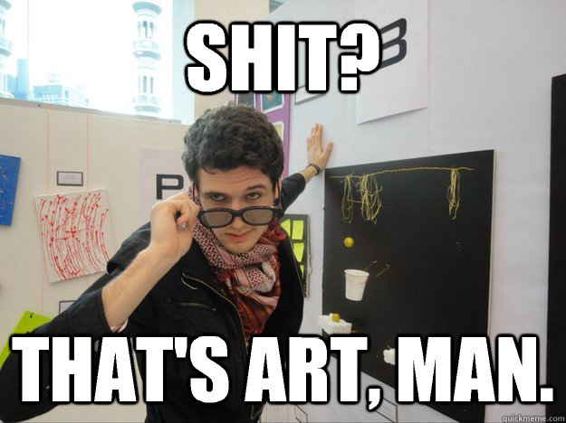
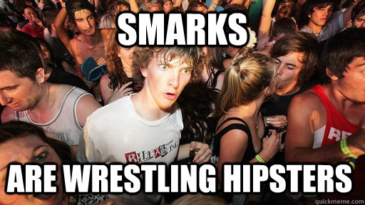

---
layout: page
title: Hi, I'm Saagar
subtitle: Software Engineer - Grad Student - Intermittent Artist - Cinephile - Productivity Geek - Smark
use-site-title: true
bigimg: ["img/bg8.jpg","img/bg8.jpg","img/bg8.jpg"]
---
Just another developer?
Grad school, Huh?...So, no sleep and lots of caffeine?
Artist?

Movies?
Productivity Geek?
What is a smark?
